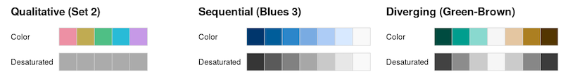

Color, Saving Output, and Geospatial Data
Read
Making Effective Use of Color
Saving Plots as Image Files
Visualizing Geospatial Data
- Why all world maps are wrong
- XKCD Map Projections
- XKCD Heatmap
- Wilke, Ch. 15: Visualizing geospatial data
Color Resources

- Color Brewer: Color advice and a great set of color palettes; r package: RColorBrewer.
- CARTOColors: Cartography-focused color palettes; r package: rcartocolor.
- viridis: Small set of very nice color palettes, best for sequential data; r package: viridis.
- colorspace: HCL-based color palettes; replicates some of the ones listed above, but also provides some interesting new ones; r package: colorspace.
- multiscales: Multivariate color scales.
- dichromat: A package to simulate color blindness.
Optional further reading about image file formats.
Extra Software and R Packages for Geospatial Data
Last week when we were trying to produce basic maps, some of you were able to get it working right away, whereas others were getting cryptic errors
If map-making is something that interests you, it would be a good idea to make sure that your computer has all the necessary software to do so by following the steps below.
If any of you are still having trouble getting the mapping to work, these steps should also resolve those problems.
Install software that enables your computer to compile R packages from their source code.
- Windows: Download and install Rtools (currently Rtools35.exe).
- Mac: Open terminal and type
xcode-select --install
Back in R Studio, install these packages:
sf,maps,maptools,rgeos, andrnaturalearth.For Mac people only: R doesn’t do all the geographic calculations by itself. It relies on some other software that runs behind the scenes. When people on Windows install
sf, those pieces of software should be installed automatically. This doesn’t happen on a Mac, so you have to install them manually. The easiest way to do this is with Terminal. Here’s what you have to do:- Open Terminal
- If you haven’t already, go to brew.sh, copy the big long command under “Install Homebrew” (starts with
/usr/bin/ruby -e "$(curl -fsSL...). - Paste the command into Terminal, and press enter. This installs Homebrew, which is special software that lets you install Unix-y programs from the Terminal. This will take a while.
- In Terminal, type this line to install the geographic software:
brew install gdal geos proj. This will also take a while.